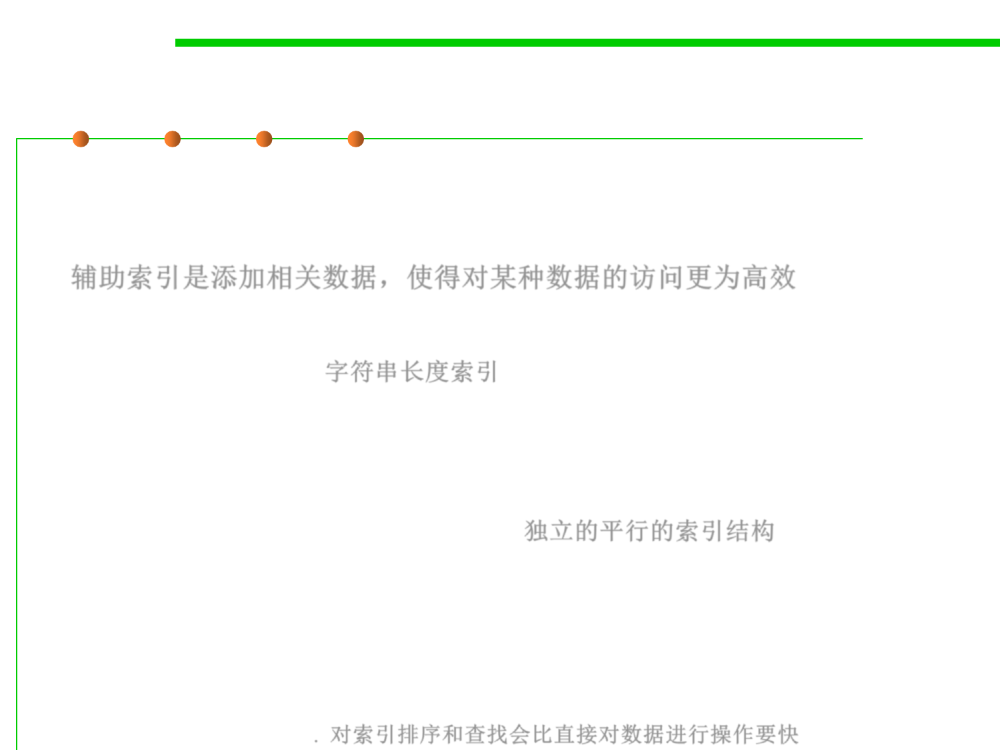

8.3 Code Tuning for Performance Optimization
Use Supplementary Indexes 使用辅助索引
▪ Using a supplementary index means adding related data that
makes accessing a data type more efficient. You can add the related
data to the main data type, or you can store it in a parallel structure.
辅助索引是添加相关数据，使得对某种数据的访问更为高效
▪ E.g.,
– String-Length Index 字符串长度索引
• In C, strings are terminated by a byte that’s set to 0.
• You can apply the idea of indexing for length to any variable-length data type.
It’s often more efficient to keep track of the length of the structure rather than
computing the length each time you need it.
– Independent, Parallel Index Structure 独立的平行的索引结构
• Sometimes it’s more efficient to manipulate an index to a data type than it is to
manipulate the data type itself.
• If each data item is large, you can create an auxiliary structure that consists of key
values and pointers to the detailed information. If the difference in size between
the data-structure item and the auxiliary-structure item is great enough,
sometimes you can store the key item in memory even when the data item has to
be stored externally. 对索引排序和查找会比直接对数据进行操作要快